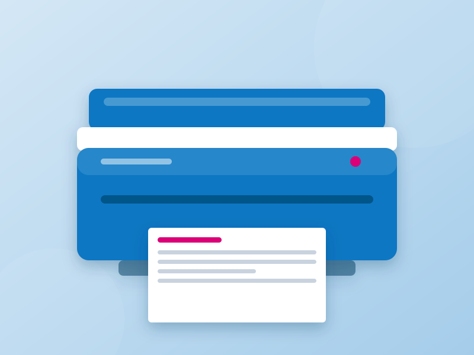
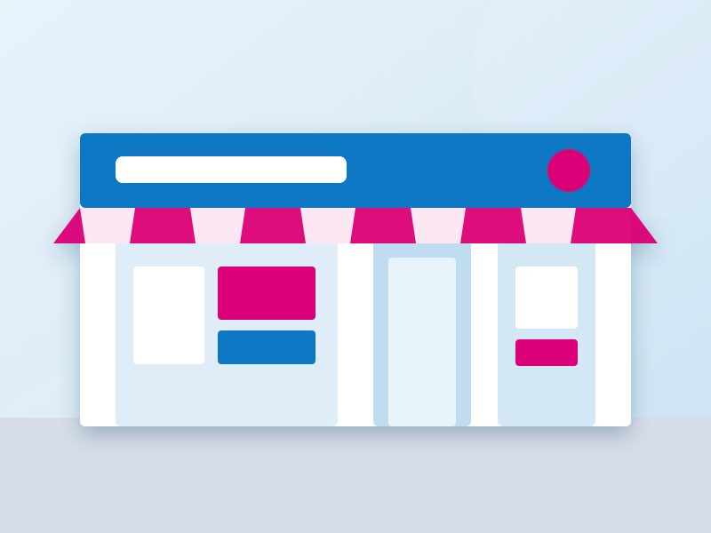

Fotocopy & Print DokumenPercetakan & Fotocopy Terpercaya di Jakarta Timur
Semua Kebutuhan Cetak Anda, Satu Tempat.
Melayani fotocopy, print dokumen, cetak ukuran besar, jilid buku, laminating, dan berbagai kebutuhan percetakan lainnya dengan hasil berkualitas dan pengerjaan rapi.
- Hasil cetak tajam & rapi
- Dikerjakan sesuai spesifikasi
- Konsultasi cukup lewat WhatsApp
Selesai ± 30 menitPrint hingga 50 lembar
Sejak 2012Melayani Jakarta Timur
Keunggulan kami
Cepat & Tepat Waktu
Pesanan ringan selesai dalam hitungan jam.
Hasil Rapi & Tajam
Mesin digital terawat dengan kontrol kualitas.
Layanan Ramah
Konsultasi bahan dan ukuran tanpa dipungut biaya.
Konsultasi via WhatsApp
Kirim file dan kebutuhan, kami balas dengan cepat.
Layanan Unggulan
Layanan yang Paling Sering Dipesan
Pilih layanan yang Anda butuhkan, lalu hubungi kami untuk konsultasi.
Kategori Layanan
Cari Layanan Sesuai Kebutuhan
Dari lembar tugas sampai spanduk acara, pilih kategori yang Anda butuhkan.
Fotocopy & Print Dokumen
Fotocopy, print A4, F4, dan A3 untuk tugas, laporan, dan berkas kantor.
3 layananLarge Format
Cetak ukuran besar A2, A1, A0, plus banner dan spanduk.
2 layananJilid & Laminating
Jilid skripsi, laporan, dan laminating dokumen penting.
2 layananDigital Printing
Cetak full color untuk sticker, poster, dan materi visual.
2 layananBrosur & Kartu Nama
Materi promosi untuk usaha: brosur, flyer, dan kartu nama.
2 layananBuku & Undangan
Cetak buku, buku acara, dan undangan dengan berbagai pilihan kertas.
2 layanan
2012Sejak
Tentang Kami
Mitra Cetak Warga Jakarta Timur Sejak 2012
Sinar Copy & Printing berawal dari satu mesin fotocopy kecil di depan kampus. Kini kami melayani pelajar, kantor, dan pelaku UMKM dengan layanan cetak lengkap, dari lembar tugas sampai spanduk acara.
Kami percaya hasil cetak yang baik dimulai dari komunikasi yang jelas: spesifikasi dikonfirmasi di awal, estimasi disebutkan sebelum dikerjakan, dan pesanan selesai sesuai janji.
- Berpengalaman lebih dari 13 tahun
- Mesin cetak digital terawat
- Tim desain siap membantu
13+Tahun melayani
25rb+Pesanan selesai
4,9/5Rating pelanggan
1 jamPesanan kilat tersedia
Mengapa Memilih Kami
Hasil Rapi, Pengerjaan Cepat, Layanan Ramah
Pengerjaan Cepat
Pesanan ringan selesai dalam hitungan jam, bukan hari.
Kualitas Terjaga
Setiap pesanan dicek sebelum diserahkan, jadi hasil rapi dan sesuai.
Jumlah Sedikit atau Banyak
Satu lembar sampai ribuan eksemplar dikerjakan dengan kerapian yang sama.
Konsultasi Gratis
Bingung memilih kertas atau ukuran? Kami bantu sarankan yang pas.
Cara Bekerja
Dari Konsultasi sampai Pesanan Jadi
Tidak perlu antre. Cukup ceritakan kebutuhan Anda lewat WhatsApp.
Hubungi Kami
Chat lewat WhatsApp dan sebutkan kebutuhan cetak Anda.
Kirim File
Kirim file desain atau dokumen, kami cek kelengkapannya.
Konfirmasi Kebutuhan
Kami cek file dan spesifikasi, lalu kirim estimasi waktu pengerjaan.
Ambil atau Antar
Ambil di toko, atau kami antar untuk area tertentu.
Portofolio
Hasil Pekerjaan Kami
Beberapa pesanan yang sudah kami selesaikan. Klik gambar untuk memperbesar.
Testimoni
Kata Pelanggan Kami
Pelajar, guru, kantor, dan pelaku UMKM sudah mempercayakan kebutuhan cetak mereka kepada kami.
FAQ
Pertanyaan yang Sering Diajukan
Hubungi kami lewat WhatsApp, sebutkan jenis layanan, ukuran, dan jumlah, lalu kirim file Anda. Kami konfirmasi kebutuhan dan estimasi selesai sebelum dikerjakan.
Bisa. Format yang kami terima antara lain PDF, DOCX, XLSX, JPG, PNG, CDR, dan AI. Untuk hasil terbaik, kirim dalam PDF.
Tunai, transfer bank, dan QRIS. Untuk pesanan besar kami meminta uang muka 50%.
Dokumen hingga 50 lembar biasanya selesai dalam 10–30 menit. Jumlah lebih banyak kami informasikan estimasinya.
Gunakan ukuran asli dengan resolusi minimal 100 dpi. Tim kami akan membantu mengecek file sebelum dicetak.
Jilid lakban atau spiral bisa selesai dalam 1 jam. Hard cover membutuhkan 1–2 hari kerja.
Lokasi
Kunjungi Toko Kami
Datang langsung untuk konsultasi, cek contoh kertas, atau ambil pesanan.
AlamatJl. Raya Bekasi Km 18 No. 27, Pulogadung, Jakarta Timur 13920
Jam operasional
| Senin – Sabtu | 08.00 – 21.00 |
| Minggu | 09.00 – 17.00 |
Telepon0812-3456-7890
Emailinfo@example.com
Butuh Layanan Cetak? Hubungi Kami Sekarang
Ceritakan kebutuhan Anda. Kami balas dengan saran bahan, ukuran, dan estimasi pengerjaan, biasanya dalam hitungan menit.